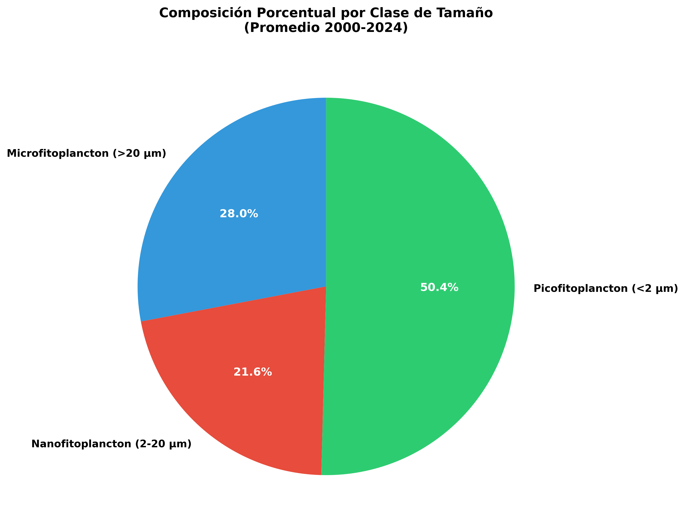
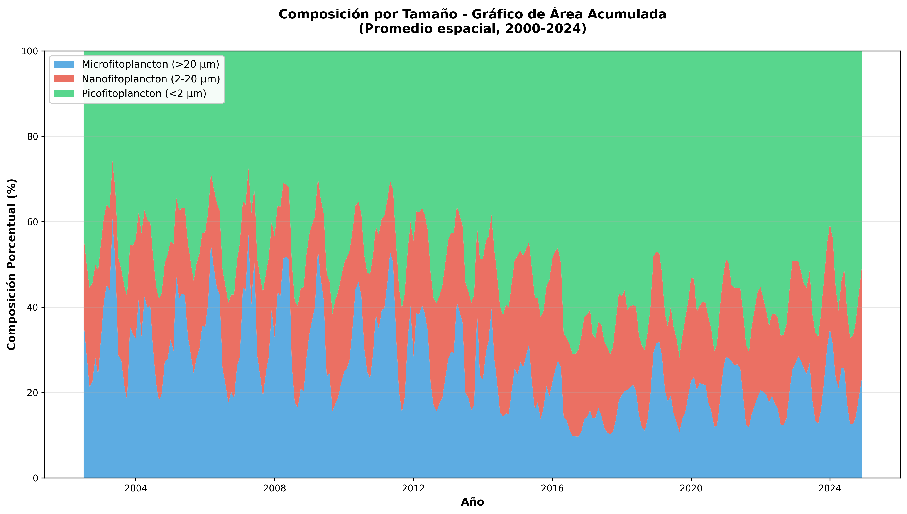
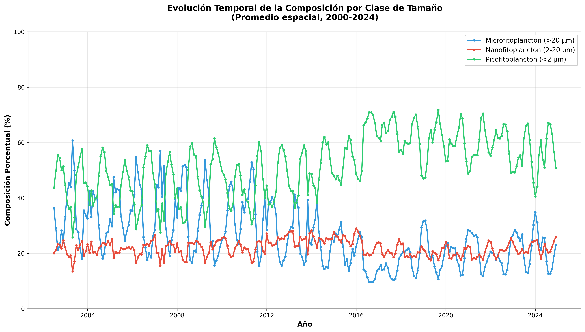
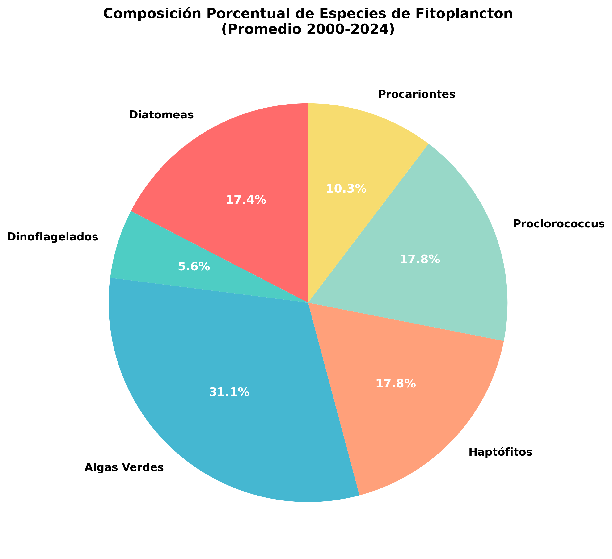
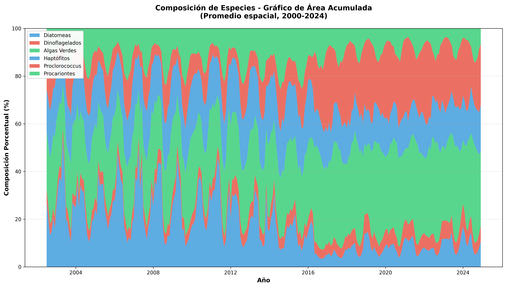
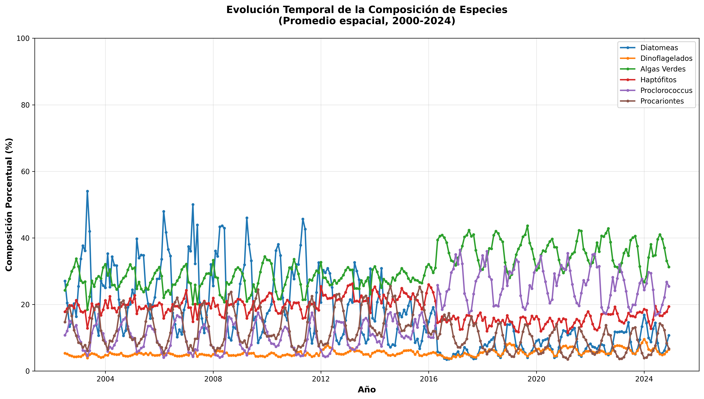
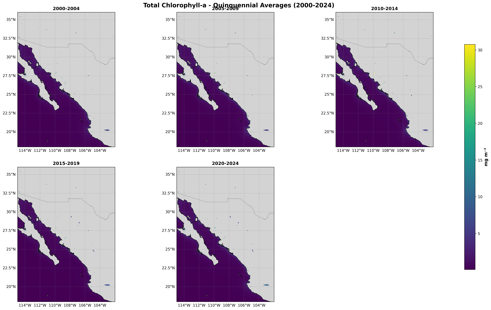
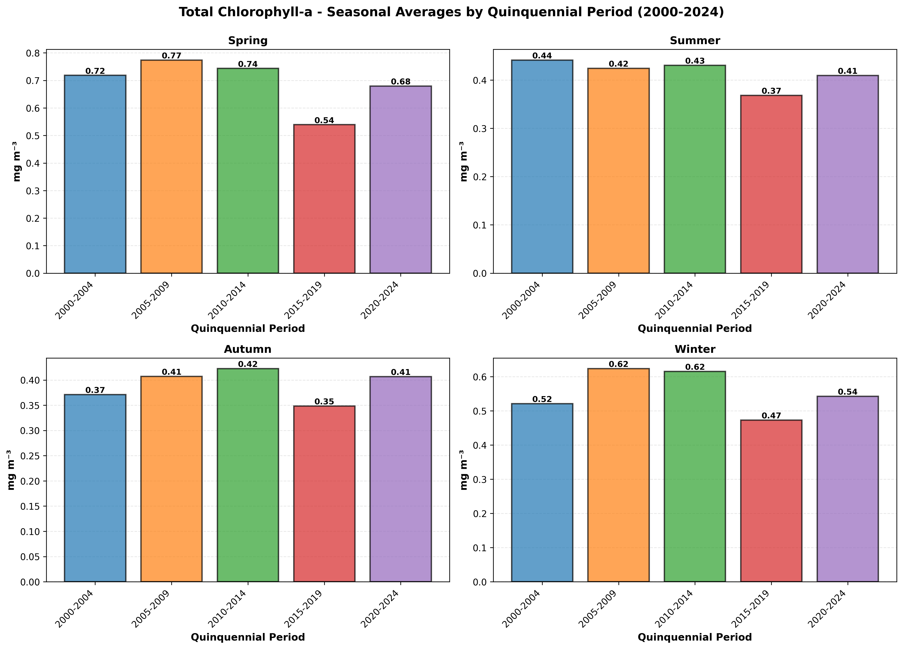
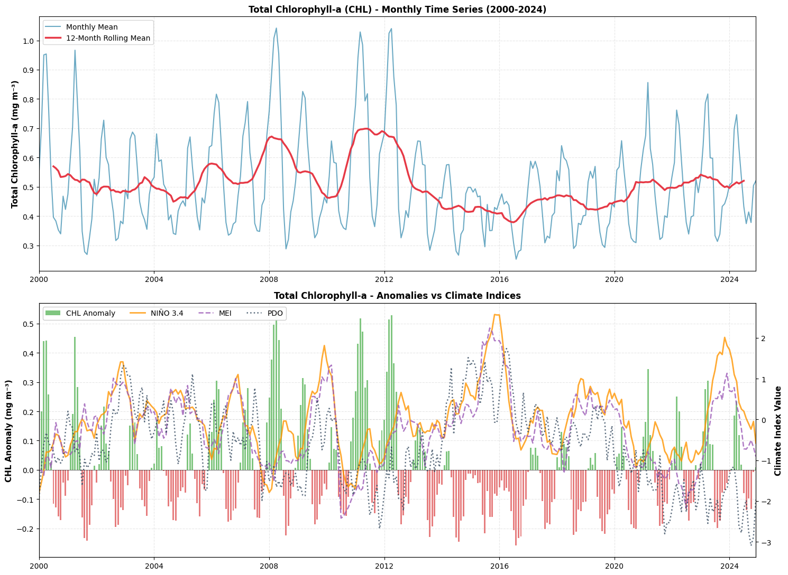

Golfo de California (2000-2024) — Datos Satelitales MODIS Aqua + Validación In-Situ eDNA
Reporte integrado con todos los resultados del análisis de tipos funcionales de fitoplancton (PFT) en el Golfo de California durante 2000-2024. Incluye análisis descriptivo (mapas, series temporales, composición), análisis inferencial avanzado (STL, Fourier, HMM, Granger, CCA, regresión segmentada, extremos) y validación con datos in-situ de eDNA.
Análisis de la composición porcentual de especies y clases de tamaño mediante gráficos interactivos.
Haz clic en los elementos de la leyenda para mostrar/ocultar. Usa el zoom con el mouse y explora los datos interactivamente.

size composition pie

size composition stacked

size composition timeseries

species composition pie

species composition stacked

species composition timeseries
Distribución espacial promedio de cada tipo funcional de fitoplancton en el Golfo de California.
CHL_mean_map.png
Anomalías de concentración del período 2020-2024 respecto a períodos anteriores.
CHL_quinquennial_diff_maps.png
Concentraciones promedio para cada período quinquenal (2000-2004, 2005-2009, 2010-2014, 2015-2019, 2020-2024).

CHL_quinquennial_maps.png
Patrones de variación estacional y comparaciones quinquenales para cada variable.

CHL_seasonal_quinquennial_comparison.png
Evolución mensual de fitoplancton (2000-2024) con superposición de índices NIÑO3.4, MEI y PDO.

CHL_timeseries_with_indices.png
Heatmaps mostrando la evolución temporal por banda de latitud para cada tipo de fitoplancton.
CHL_latitude_time_heatmap.png
Resumen estadístico por variable y período quinquenal: media, desviación estándar, tendencia lineal y correlaciones climáticas.
| Variable | Período | Media | Mediana | Desv. Est. | Mín | Máx |
|---|---|---|---|---|---|---|
| Clorofila-a Total | 2000-2004 | 1.0868 | 1.0104 | 0.4789 | 0.4203 | 2.3576 |
| 2005-2009 | 1.1569 | 1.0858 | 0.5023 | 0.4375 | 2.2259 | |
| 2010-2014 | 1.1401 | 1.1289 | 0.5165 | 0.4264 | 2.4562 | |
| 2015-2019 | 0.9277 | 0.9444 | 0.3175 | 0.4410 | 1.5896 | |
| 2020-2024 | 1.0661 | 1.0588 | 0.4184 | 0.4898 | 2.1789 | |
| Diatomeas | 2000-2004 | 0.1535 | 0.1160 | 0.1079 | 0.0323 | 0.3633 |
| 2005-2009 | 0.1490 | 0.1202 | 0.1006 | 0.0235 | 0.3680 | |
| 2010-2014 | 0.1127 | 0.0822 | 0.0996 | 0.0216 | 0.4584 | |
| 2015-2019 | 0.0608 | 0.0378 | 0.0546 | 0.0118 | 0.2458 | |
| 2020-2024 | 0.0781 | 0.0518 | 0.0649 | 0.0172 | 0.3077 | |
| Dinoflagelados | 2000-2004 | 0.0307 | 0.0289 | 0.0100 | 0.0164 | 0.0502 |
| 2005-2009 | 0.0315 | 0.0292 | 0.0115 | 0.0140 | 0.0560 | |
| 2010-2014 | 0.0295 | 0.0274 | 0.0117 | 0.0135 | 0.0587 | |
| 2015-2019 | 0.0422 | 0.0316 | 0.0276 | 0.0151 | 0.1313 | |
| 2020-2024 | 0.0669 | 0.0591 | 0.0354 | 0.0274 | 0.1731 | |
| Algas Verdes | 2000-2004 | 0.1917 | 0.1719 | 0.0674 | 0.0994 | 0.3130 |
| 2005-2009 | 0.1721 | 0.1651 | 0.0573 | 0.0841 | 0.2972 | |
| 2010-2014 | 0.1536 | 0.1302 | 0.0696 | 0.0734 | 0.3880 | |
| 2015-2019 | 0.2859 | 0.2894 | 0.1162 | 0.0856 | 0.5520 | |
| 2020-2024 | 0.4119 | 0.3815 | 0.1044 | 0.2565 | 0.6524 | |
| Haptófitos | 2000-2004 | 0.1149 | 0.1093 | 0.0307 | 0.0695 | 0.1765 |
| 2005-2009 | 0.1083 | 0.1063 | 0.0284 | 0.0590 | 0.1671 | |
| 2010-2014 | 0.1017 | 0.0959 | 0.0321 | 0.0559 | 0.1889 | |
| 2015-2019 | 0.1079 | 0.0953 | 0.0379 | 0.0634 | 0.2140 | |
| 2020-2024 | 0.1421 | 0.1312 | 0.0536 | 0.0731 | 0.2828 | |
| Microfitoplancton | 2000-2004 | 0.1842 | 0.1471 | 0.1168 | 0.0487 | 0.4135 |
| 2005-2009 | 0.1806 | 0.1502 | 0.1115 | 0.0375 | 0.4198 | |
| 2010-2014 | 0.1422 | 0.1142 | 0.1102 | 0.0351 | 0.5107 | |
| 2015-2019 | 0.1029 | 0.0802 | 0.0773 | 0.0313 | 0.3729 | |
| 2020-2024 | 0.1449 | 0.1119 | 0.0996 | 0.0447 | 0.4795 | |
| Nanofitoplancton | 2000-2004 | 0.1149 | 0.1093 | 0.0307 | 0.0695 | 0.1765 |
| 2005-2009 | 0.1083 | 0.1063 | 0.0284 | 0.0590 | 0.1671 | |
| 2010-2014 | 0.1017 | 0.0959 | 0.0321 | 0.0559 | 0.1889 | |
| 2015-2019 | 0.1079 | 0.0953 | 0.0379 | 0.0634 | 0.2140 | |
| 2020-2024 | 0.1421 | 0.1312 | 0.0536 | 0.0731 | 0.2828 | |
| Picofitoplancton | 2000-2004 | 0.2578 | 0.2355 | 0.0534 | 0.1819 | 0.3574 |
| 2005-2009 | 0.2322 | 0.2272 | 0.0442 | 0.1631 | 0.3340 | |
| 2010-2014 | 0.2099 | 0.1909 | 0.0650 | 0.1386 | 0.4335 | |
| 2015-2019 | 0.3324 | 0.3431 | 0.1108 | 0.1479 | 0.5821 | |
| 2020-2024 | 0.4549 | 0.4286 | 0.0978 | 0.3066 | 0.6863 | |
| Proclorococcus | 2000-2004 | 0.0402 | 0.0428 | 0.0103 | 0.0208 | 0.0566 |
| 2005-2009 | 0.0304 | 0.0305 | 0.0112 | 0.0130 | 0.0493 | |
| 2010-2014 | 0.0268 | 0.0270 | 0.0114 | 0.0077 | 0.0524 | |
| 2015-2019 | 0.2000 | 0.1716 | 0.1535 | 0.0152 | 0.5736 | |
| 2020-2024 | 0.2996 | 0.2885 | 0.1504 | 0.0999 | 0.6755 | |
| Procariontes | 2000-2004 | 0.0661 | 0.0643 | 0.0168 | 0.0421 | 0.0946 |
| 2005-2009 | 0.0601 | 0.0591 | 0.0164 | 0.0359 | 0.0885 | |
| 2010-2014 | 0.0563 | 0.0528 | 0.0161 | 0.0311 | 0.0908 | |
| 2015-2019 | 0.0467 | 0.0441 | 0.0121 | 0.0266 | 0.0886 | |
| 2020-2024 | 0.0433 | 0.0417 | 0.0101 | 0.0279 | 0.0638 |
| Variable | Pendiente (año⁻¹) | r MEI | Lag MEI | r NIÑO3.4 | Lag NIÑO3.4 | r PDO | Lag PDO |
|---|---|---|---|---|---|---|---|
| Clorofila-a Total | -0.007055 | - | - | - | - | - | - |
| Diatomeas | -0.005229 | - | - | - | - | - | - |
| Dinoflagelados | 0.001946 | - | - | - | - | - | - |
| Algas Verdes | 0.013243 | - | - | - | - | - | - |
| Haptófitos | 0.001422 | - | - | - | - | - | - |
| Microfitoplancton | -0.003290 | - | - | - | - | - | - |
| Nanofitoplancton | 0.001422 | - | - | - | - | - | - |
| Picofitoplancton | 0.012038 | - | - | - | - | - | - |
| Proclorococcus | 0.015965 | - | - | - | - | - | - |
| Procariontes | -0.001184 | - | - | - | - | - | - |
Separación de tendencia, estacionalidad y residuales (Cleveland et al., 1990). Detección de eventos extremos en percentiles 10 y 90.
DIATO_mean_stl_decomposition.png
Espectro de potencia FFT para identificar periodicidades dominantes (ciclos anuales, interanuales) en cada serie temporal.
DIATO_mean_fourier_spectrum.png
Modelos Ocultos de Markov (2 estados) para detectar transiciones entre regímenes productivos alto y bajo.
DIATO_mean_hmm_regimen.png
Detección de eventos extremos mediante tres métodos complementarios: umbral móvil, IQR robusto y detección de rupturas.
DIATO_mean_extremos_alternativos.png
Correlaciones de Pearson con desfases de 0-6 meses entre anomalías de biomasa e índices climáticos. Significancia por 1000 permutaciones.
Correlación de Pearson entre anomalías de biomasa e índices climáticos (MEI, PDO, NIÑO3.4) para desfases de 0 a 6 meses. Significancia evaluada con 1000 pruebas de permutación (α = 0.05).
| Variable | Índice | Mejor Lag (meses) | r (correlación) | p-valor | Significativo |
|---|---|---|---|---|---|
| Diatomeas | MEI | 1 | -0.069 | 0.2530 | ✖ No |
| Diatomeas | NINO34 | 0 | -0.151 | 0.0120 | ✔️ Sí |
| Diatomeas | PDO | 2 | 0.096 | 0.0990 | ✖ No |
| Dinoflagelados | MEI | 6 | -0.103 | 0.1030 | ✖ No |
| Dinoflagelados | NINO34 | 5 | 0.067 | 0.2980 | ✖ No |
| Dinoflagelados | PDO | 6 | -0.379 | 0.0000 | ✔️ Sí |
| Algas Verdes | MEI | 4 | -0.216 | 0.0000 | ✔️ Sí |
| Algas Verdes | NINO34 | 0 | -0.116 | 0.0660 | ✖ No |
| Algas Verdes | PDO | 6 | -0.440 | 0.0000 | ✔️ Sí |
| Haptófitos | MEI | 5 | -0.140 | 0.0200 | ✔️ Sí |
| Haptófitos | NINO34 | 0 | -0.102 | 0.1030 | ✖ No |
| Haptófitos | PDO | 6 | -0.334 | 0.0000 | ✔️ Sí |
| Microfitoplancton | MEI | 1 | -0.082 | 0.1610 | ✖ No |
| Microfitoplancton | NINO34 | 0 | -0.141 | 0.0270 | ✔️ Sí |
| Microfitoplancton | PDO | 6 | -0.139 | 0.0260 | ✔️ Sí |
| Nanofitoplancton | MEI | 5 | -0.140 | 0.0260 | ✔️ Sí |
| Nanofitoplancton | NINO34 | 0 | -0.102 | 0.0890 | ✖ No |
| Nanofitoplancton | PDO | 6 | -0.334 | 0.0000 | ✔️ Sí |
| Picofitoplancton | MEI | 4 | -0.219 | 0.0000 | ✔️ Sí |
| Picofitoplancton | NINO34 | 0 | -0.116 | 0.0670 | ✖ No |
| Picofitoplancton | PDO | 6 | -0.450 | 0.0000 | ✔️ Sí |
| Proclorococcus | MEI | 6 | -0.168 | 0.0010 | ✔️ Sí |
| Proclorococcus | NINO34 | 0 | -0.059 | 0.3230 | ✖ No |
| Proclorococcus | PDO | 6 | -0.320 | 0.0000 | ✔️ Sí |
| Procariontes | MEI | 3 | 0.104 | 0.1040 | ✖ No |
| Procariontes | NINO34 | 1 | 0.079 | 0.2210 | ✖ No |
| Procariontes | PDO | 6 | 0.194 | 0.0000 | ✔️ Sí |
Prueba F para evaluar si los valores pasados de índices climáticos mejoran la predicción de biomasa (lags 1-6 meses).
La causalidad de Granger prueba si los valores pasados de un índice climático X mejoran la predicción de la biomasa Y mediante una prueba F para cada lag (1-6 meses). Si p < 0.05, se dice que X "causa" a Y en sentido de Granger en ese lag.
| Variable | Índice | Mejor Lag | p-valor (F-test) | Significativo |
|---|---|---|---|---|
| Diatomeas | MEI | 3 | 0.2379 | ✖ No |
| Diatomeas | NINO34 | 6 | 0.1657 | ✖ No |
| Diatomeas | PDO | 1 | 0.2842 | ✖ No |
| Dinoflagelados | MEI | 2 | 0.2020 | ✖ No |
| Dinoflagelados | NINO34 | 1 | 0.4281 | ✖ No |
| Dinoflagelados | PDO | 3 | 0.0054 | ✔️ Sí |
| Algas Verdes | MEI | 4 | 0.0028 | ✔️ Sí |
| Algas Verdes | NINO34 | 6 | 0.4614 | ✖ No |
| Algas Verdes | PDO | 6 | 0.1120 | ✖ No |
| Haptófitos | MEI | 3 | 0.2533 | ✖ No |
| Haptófitos | NINO34 | 6 | 0.2497 | ✖ No |
| Haptófitos | PDO | 4 | 0.0003 | ✔️ Sí |
| Proclorococcus | MEI | 3 | 0.1011 | ✖ No |
| Proclorococcus | NINO34 | 6 | 0.1706 | ✖ No |
| Proclorococcus | PDO | 3 | 0.3081 | ✖ No |
| Procariontes | MEI | 1 | 0.4985 | ✖ No |
| Procariontes | NINO34 | 6 | 0.0543 | ✖ No |
| Procariontes | PDO | 1 | 0.0143 | ✔️ Sí |
Combinaciones lineales de variables PFT que correlacionan máximamente con los índices climáticos.
La Correlación Canónica (CCA) busca combinaciones lineales de variables PFT que correlacionan máximamente con combinaciones de índices climáticos. Cada dimensión canónica tiene su propia correlación.
| canonica | correlacion |
|---|---|
| 1.0000 | 0.5279 |
| 2.0000 | 0.3130 |
Relaciones lineales por tramos entre biomasa e índices climáticos para detectar umbrales y no-linealidades.
DIATO_mean_vs_MEI_piecewise.png
Co-ocurrencia de extremos simultáneos de biomasa (>p90/
Se identifican meses con eventos extremos simultáneos: biomasa ALTA (>p90) con índice ALTO (>p90), o biomasa BAJA (<p10) con índice BAJO (<p10). Esto evalúa la co-ocurrencia de extremos.
| Variable | Índice | Tipo | N eventos |
|---|---|---|---|
| Diatomeas | MEI | Altos / Bajos / Total | 0 / 0 / 6 |
| Diatomeas | NINO34 | Altos / Bajos / Total | 0 / 0 / 1 |
| Diatomeas | PDO | Altos / Bajos / Total | 0 / 0 / 9 |
| Dinoflagelados | MEI | Altos / Bajos / Total | 0 / 0 / 6 |
| Dinoflagelados | NINO34 | Altos / Bajos / Total | 0 / 0 / 7 |
| Dinoflagelados | PDO | Altos / Bajos / Total | 0 / 0 / 1 |
| Algas Verdes | MEI | Altos / Bajos / Total | 0 / 0 / 3 |
| Algas Verdes | NINO34 | Altos / Bajos / Total | 0 / 0 / 5 |
| Algas Verdes | PDO | Altos / Bajos / Total | 0 / 0 / 1 |
| Haptófitos | MEI | Altos / Bajos / Total | 0 / 0 / 4 |
| Haptófitos | NINO34 | Altos / Bajos / Total | 0 / 0 / 6 |
| Haptófitos | PDO | Altos / Bajos / Total | 0 / 0 / 1 |
| Proclorococcus | MEI | Altos / Bajos / Total | 0 / 0 / 4 |
| Proclorococcus | NINO34 | Altos / Bajos / Total | 0 / 0 / 5 |
| Proclorococcus | PDO | - | Sin eventos conjuntos |
| Procariontes | MEI | Altos / Bajos / Total | 0 / 0 / 5 |
| Procariontes | NINO34 | Altos / Bajos / Total | 0 / 0 / 5 |
| Procariontes | PDO | Altos / Bajos / Total | 0 / 0 / 7 |
Distribución de abundancia de grupos taxonómicos por capa de profundidad (Somera: 1-26m, Media: 35-140m, Profunda: 220-1000m).
01_timeseries_depth_cianobacterias.png
Validación cruzada entre estimaciones satelitales y datos in-situ de eDNA por grupo taxonómico.
climatologia_mensual_sat_vs_insitu.png
Distribución temporal, heatmaps y composición de productores primarios in-situ (Diatomeas, Dinoflagelados, Clorofitas, Cianobacterias, Haptófitos, Protozoa).
barras_apiladas_in_situ_proporciones_anuales.png